git --versiongit version 2.34.1Following Along with BEE2041 Class Examples
As laid out on the class page, prior to starting working with git we will need to install it on our machine. Here, we will work with the command line for using git. While there are GUIs available, by far the most flexible way to deal with git is via the command line, which is why we will introduce it this way. Let’s first just confirm that we effectively have git installed, which we can do with the command below:
git --versiongit version 2.34.1Provided that we get some output printing a version number (which will depend upon when you installed it), this implies that git is installed. If you get some other message such as 'git' is not recognized as an internal or external command, operable program or batch file. (or some other message suggesting git is not installed), you will need to return to the resources on git, and ensure that the installation has been completed.
If this is the first time you are working with git, you may want to complete some first time set-up procedures. While not strictly necessary, they will make interacting with github later on much easier, and so it is potentially worth at least setting up the basics now. In particular, we will want to tell git our username and email address. For the email address, we should use the same email which we will use to generate a github account, which ideally should be an email we plan to keep for an extended period of time. This can be done as follows:
git config --global user.name "Your name"
git config --global user.email youremail@example.comwhere “Your name” and the email should be filled in appropriately. We can confirm that this has been updated as follows:
git config --listuser.email=damian.clarke@protonmail.com
user.name=damiancclarke
init.defaultbranch=mainDepending on your installation, you may see slightly different configurations, for example if some particular other settings are configured as default.
To have a quick look under the hood and where we will be going with git, you may wish to briefly consult the top-level manual which you can do with git --help.
git --helpusage: git [--version] [--help] [-C <path>] [-c <name>=<value>]
[--exec-path[=<path>]] [--html-path] [--man-path] [--info-path]
[-p | --paginate | -P | --no-pager] [--no-replace-objects] [--bare]
[--git-dir=<path>] [--work-tree=<path>] [--namespace=<name>]
[--super-prefix=<path>] [--config-env=<name>=<envvar>]
<command> [<args>]
These are common Git commands used in various situations:
start a working area (see also: git help tutorial)
clone Clone a repository into a new directory
init Create an empty Git repository or reinitialize an existing one
work on the current change (see also: git help everyday)
add Add file contents to the index
mv Move or rename a file, a directory, or a symlink
restore Restore working tree files
rm Remove files from the working tree and from the index
examine the history and state (see also: git help revisions)
bisect Use binary search to find the commit that introduced a bug
diff Show changes between commits, commit and working tree, etc
grep Print lines matching a pattern
log Show commit logs
show Show various types of objects
status Show the working tree status
grow, mark and tweak your common history
branch List, create, or delete branches
commit Record changes to the repository
merge Join two or more development histories together
rebase Reapply commits on top of another base tip
reset Reset current HEAD to the specified state
switch Switch branches
tag Create, list, delete or verify a tag object signed with GPG
collaborate (see also: git help workflows)
fetch Download objects and refs from another repository
pull Fetch from and integrate with another repository or a local branch
push Update remote refs along with associated objects
'git help -a' and 'git help -g' list available subcommands and some
concept guides. See 'git help <command>' or 'git help <concept>'
to read about a specific subcommand or concept.
See 'git help git' for an overview of the system.We can see from this that git is relatively light in terms of the number of different commands we may need, and indeed, probably much of the time we are interacting with git it will be with just a small sub-set of these commands. We will start to get into this now…
Let’s imagine that we are starting a big software project, and know that we will need version control. This may involve multiple people, but for the time being, we may only just be working by ourselves on our local machine. To see a very contrived example, let’s generate a new file called myproject, and then within this project begin our first git repository.
mkdir myproject
cd myproject
git initInitialized empty Git repository in /home/dcc213/BEE2041/topic4/myproject/.git/At times we may wish to begin a git project before we generate any files at all, but it is also not a problem to start a project in a directory which already contains files. We have seen that starting our git respository with git init provides us a message that an empty repository has been generated. This has been initialised in a new directory called .git. You may note that if you are in the directory where the repository is located and type ls we will not actually see anything:
lsand this is because directories starting with . are hidden, both when typing ls as well as when looking at them in folders. However, if we ask ls to show us everything, we will see that it is there:
ls -a.
..
.gitWe do not need to know precisely what goes on inside the .git folder, just that this will keep track of our project and its changes if instructed. We can see in a broad sense what git is seeing with git log and git status. When we have not yet done anything git log will return an error as below:
git logfatal: your current branch 'main' does not have any commits yetwhile git status will, as yet, suggest relatively little is happening:
git statusOn branch main
No commits yet
nothing to commit (create/copy files and use "git add" to track)Because we have not yet added any code, there is not much that git needs to keep track of!
Let’s now add a very simple first code, and see what happens. Below we will just generate a simple plain text file, consisting simply of the words “Hello world!”.
echo "Hello world!" > file1.txtWe have stored this in a file called file1.txt (using notation we know from our work in BASH). Now, let’s see what the git status tells us:
git statusOn branch main
No commits yet
Untracked files:
(use "git add <file>..." to include in what will be committed)
file1.txt
nothing added to commit but untracked files present (use "git add" to track)Now we see that git tells us there is a file there, but it’s not being tracked. If this is part of the code of our project, we will want to track it so we can have a history of how it evolves, and roll back to prior versions if necessary. We will now “stage” this file, which means it could be committed to our git repository, and enter the version control history.
git add file1.txt
git statusOn branch main
No commits yet
Changes to be committed:
(use "git rm --cached <file>..." to unstage)
new file: file1.txtThe key line above with git add filename which tells git to put file1.txt into the “staging area”. This allows us to do a number of things such as see any differences between staged and unstaged versions of the file, and, fundamentally, commit our files to the git repository. We do this below with git commit.
git commit -m "Adds hello world file"[main (root-commit) 70e6989] Adds hello world file
1 file changed, 1 insertion(+)
create mode 100644 file1.txtThe syntax of git commit is to first write the command, and then -m followed by a commit message. This provides us a brief snapshot of what we’ve done, and something that will hopefully jog our memory later on. If we type git commit without specifying a message inline with is fine, but our command line will open an editor and we will need to type one. What we have done with git commit is add our code to the version control history of the project. If we now type git status and git log we will see a few changes, with the most important being the change in git log.
git status
git logOn branch main
nothing to commit, working tree clean
commit 70e6989f417a92e3549eaa2c6d17fd28cbe0b9c5
Author: damiancclarke <damian.clarke@protonmail.com>
Date: Thu Mar 7 10:55:13 2024 +0000
Adds hello world fileWe can see at the end that we have a new commit which is indicated by a long string of letters and numbers, as well as information on the author and date of the commit.
Essentially, we should commit code to our repository every time we have made a concrete change. A very nice discussion of commits, along with commit messages is available here. This commit will be available forever after, and even if we later make many changes, we will always have the option to see the code as it existed at this moment in time, and roll back to it if we wish.
Let’s imagine that we now need to add another piece of code to our repository, which depends on some new output of our old file1.txt. Below we will add a new line to file1.txt, and then stage the changed version of file1.txt:
echo "Some addition outputting something for file2.txt" >> file1.txt
git add file1.txt
git statusOn branch main
Changes to be committed:
(use "git restore --staged <file>..." to unstage)
modified: file1.txtWe will not commit this yet, because we want to also write file2.txt and then commit the two changes together as a single new function in the code.
echo "A new file taking input from file1.txt" >> file2.txt
git add file2.txt
git commit -m "Adds new function file2 which interacts with file1"
git status[main bae4643] Adds new function file2 which interacts with file1
2 files changed, 2 insertions(+)
create mode 100644 file2.txt
On branch main
nothing to commit, working tree cleanWe have now added this new commit to our repository, and if we look at the git log below, we will see that both versions of the files are tracked. However, if we look in our main folder (with ls), we will see that we do not have any bloat or have to worry about anything in particular about prior versions of the files. We can get at them if we want or roll-back to any previous versions, but if we don’t ask for anything, we will just see the most recent versions of all our files.
git log
lscommit bae4643c14bdf8e0f68b5429eea4913eee82f5c3
Author: damiancclarke <damian.clarke@protonmail.com>
Date: Thu Mar 7 10:55:13 2024 +0000
Adds new function file2 which interacts with file1
commit 70e6989f417a92e3549eaa2c6d17fd28cbe0b9c5
Author: damiancclarke <damian.clarke@protonmail.com>
Date: Thu Mar 7 10:55:13 2024 +0000
Adds hello world file
file1.txt
file2.txtWhile this is all well and good for keeping track of our own work, it does not really show case much of the true power of git, which is for working in a dencentralised way among potentially many different individuals. Let’s now see how git can interact with github. I will assume that you have now generated a free github account based on the email indicated above. We will now talk through a few things:
Probably much of our work will be on point 1, especially early on in our usage of git, but as you start to work on more collaborative projects, you may see that gradually you are spending more on point 2 above.
Let’s now imagine that the project we have created above is something that we want to share publicly, either so that people can see and use the code, or so that we can collaborate with others who may also contribute to the project. We can do this from within github with the + symbol pictured below, and then indicating “New repository”.
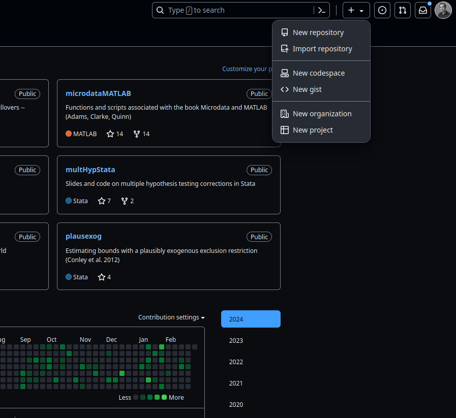
This will then provide us with a place to indicate a repository name, as well as whether we wish to have this be public or private, as well as optionally whether we would like to include a License file to start. If we are starting a fresh repository without any code to push from our machine we might want to add a license file, otherwise we will probably prefer to begin with an empty repository to push everything we have locally on our machine into. Once we are satisfied with the details below, we can click “Create repository”.
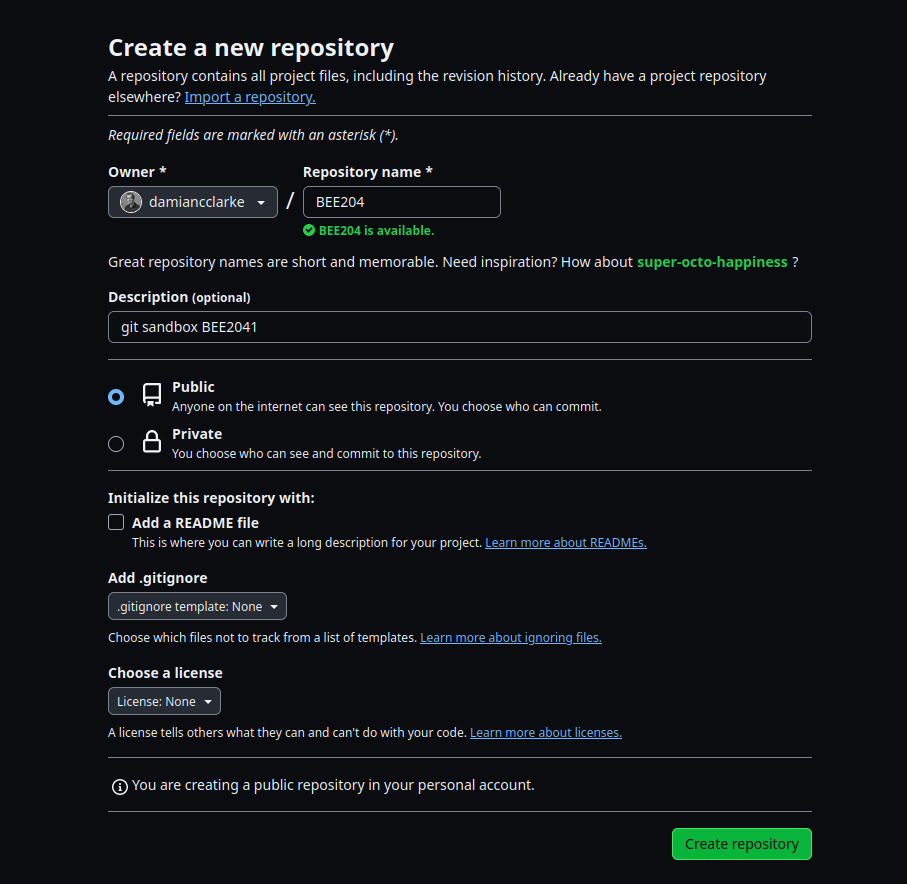
Now we need to go about including the code which we have stored locally on our machine into this repository. If we have a git repository already located on our machine that we wish to incorporate into this github repository, we need to take a few steps. Let’s see this with the repository we have already set up previously. Within this repository on our machine, we will need indicate that we wish to contribute to a remote repository. We do this below, where the remote location will depend on our username and github repository name:
git remote add origin https://github.com/damiancclarke/BEE2041If things work as planned, there should be no message here, but if we want to confirm that something has occured, we can check this as below.
git remote -vorigin https://github.com/damiancclarke/BEE2041 (fetch)
origin https://github.com/damiancclarke/BEE2041 (push)Once we have done this, we are close to ready to “push” our code locally to the place we have indicated as “origin”. To do this, we will first ensure that we have a branch called “main” on our machine. Because we only have one branch, it may be that by default this is called main, but the below code ensures that we know where we are pushing any code from. After we have done this, we will “push” the code that we have locally on “main” to the repository that we have on github which we have called “origin” above.
git branch -M main
git push -u origin mainUsername for 'https://github.com': damiancclarke
Password for 'https://damiancclarke@github.com':
Enumerating objects: 10, done.
Counting objects: 100% (10/10), done.
Delta compression using up to 8 threads
Compressing objects: 100% (6/6), done.
Writing objects: 100% (9/9), 882 bytes | 882.00 KiB/s, done.
Total 9 (delta 1), reused 0 (delta 0), pack-reused 0
remote: Resolving deltas: 100% (1/1), done.
To https://github.com/damiancclarke/BEE2041
28fbef7..23334ef main -> main
Branch 'main' set up to track remote branch 'main' from 'origin'.When we do the push above, we need to be able to access our repository on github. As this is of course sensitive (we would not want anybody to be able to push to our repsitories), git will require a password. Some information related to possible alternative routes to do this from github are available here, and note that the password that github requires is not actually the password we use to login, but rather a personal access token which can be generated as discussed here. While it is a bit of hassle to have to do this additional step to push code, it is safer, and once it has been done once, we can use the personal access token for a long period of time, until we set it to expire.
Once we have done this, and given that we will have this repository available publicly, we may wish to add a README file which will provide some information on this repository to people who look at our repo on github. We can do this by adding a file called README.md. If we write this file using github’s markdown, it will be visualised well online. Let’s imagine we have edited some README.md file, we can then stage and commit it below.
git add README.md
git commit -m "Incorporates README to our repo"Username for 'https://github.com': damiancclarke
Password for 'https://damiancclarke@github.com':
[main 00d2f26] Incorporates README to our repo
1 file changed, 1 insertion(+)Now when we look on github, everything we have done so far will be there! This should look something like the below:
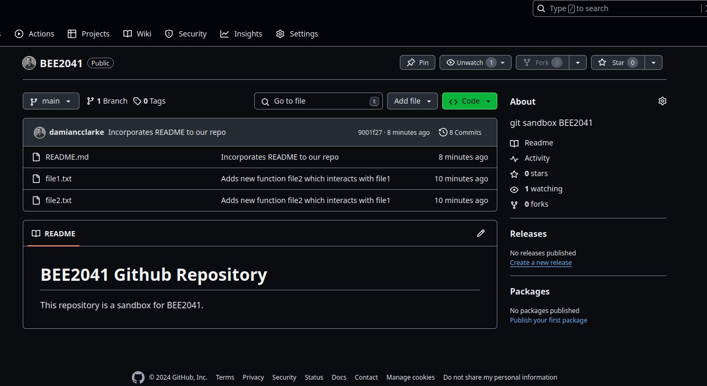
If we look at individual codes, we can also see the full history, with an easy-to-use interface showing exact changes between any versions. In the below screen shot for example we see exactly what change was made when we moved from our first to second commit at the beginning of this project. In practice, when commits involve more lines of code, this feature can come in very handy.

At this stage our local git repository and github repository are in sync. At the beginning and at the end of any working session, we should always ensure that this is the case. If you are collaborating on a project with others, it is possible that by the time you start a new working session, your collaborators may have made some changes and pushed it to the github repository. In this case, we should always first ensure that we are up to date with all the recent updates from github before we make any other changes ourself. The nice thing about it is that you can use git pull even when in doubt. In this particular case, no change will appear because we are already in sync, and no one else has edited this repository.
git pullAlready up to date.As a final point, let’s see how we could contribute to an existing repository on github. This may occur for a number of reasons. It may be that there is some piece of software that we frequently use and which we haved edited slightly to improve performance, and want to suggest this as a general feature to the code’s maintainer. Or it might be that we are working in a team, and want to incorporate work into the repository of the project the team is working on. Regardless of why, if we wish to do work on the code, the first thing we will do is “fork” the repository on github. In order to give an idea of how this looks on both sides (from the maintainer of the repository, and the person who forks it), below I am working with another github account. This new account has no copy of the repository to begin with. Any screen shots below where github is coloured white are based on this new account which is copying the repository, and which wants to contribute. Any screen shots which are coloured black are showing things from the point of view of my original account (the account which maintains the repository).
The first thing the “contributor” must do is simply take a fork of the repository. This requires no permission as anyone can work with public code on github, and places a fresh copy of the respository on the contributor’s github repository. At this point, any changes made in that repository will be limited only to the contributor’s repository. Below we see two screen shots showing how one makes a fork:
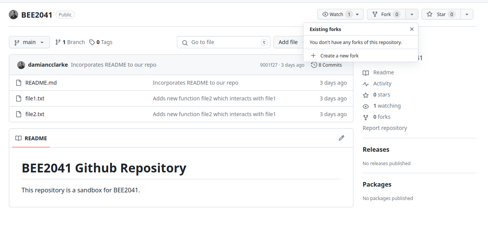
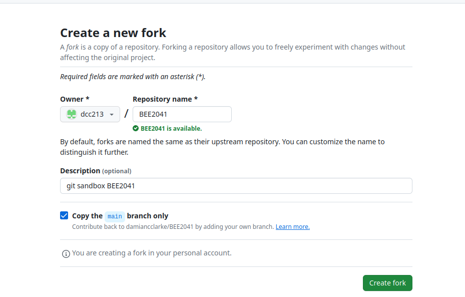
Once we have forked this, we will see that a copy of this repository now exists on our github profile. To actually work with this repository, we probably want to copy it locally to our machine. We actually could develop code directly on github’s site, but in practice we will probably want to have available tools on our operating system, so we will assume we want to develop it locally. To do this, we use git clone. This simply puts a copy of the indicated repository and its git history on our machine. We can see that when we do this, if we type git log we see the entire git history of the repository, including the prior versions which the original author has published.
git clone https://github.com/dcc213/BEE2041Cloning into 'BEE2041'...
remote: Enumerating objects: 18, done.
remote: Counting objects: 100% (18/18), done.
remote: Compressing objects: 100% (12/12), done.
remote: Total 18 (delta 4), reused 16 (delta 2), pack-reused 0
Receiving objects: 100% (18/18), done.
Resolving deltas: 100% (4/4), done.Now that we have cloned the repository, we can get to work. In the interests of brevity, let’s simply generate some new file. Below we have a look at what is in the repository, and then generate a file called file3.txt.
ls
echo "Adding a third test file" > file3.txtfile1.txt file2.txt README.mdNow let’s stage the file and commit the file to our git history. What this is doing is incorporating the file into our git history locally. This is not yet incorporated into (a) our version of the github repository or (b) the original developer’s copy of the github repository…
git add file3.txt
git commit -m "Adding a third file"[main ab83a99] Adding a third file
1 file changed, 1 insertion(+)
create mode 100644 file3.txtTo push the changes to our copy of the project is easy, and we can do it in the same way we discussed above when seeing how we push to our own projects. Indeed, because we have already done a git clone, git knows how our local branch and github branch correspond, so we do not need to tell it anything more than that we wish to push our local changes. We do this below:
git pushUsername for 'https://github.com': dcc213
Password for 'https://dcc213@github.com':
Enumerating objects: 4, done.
Counting objects: 100% (4/4), done.
Delta compression using up to 8 threads
Compressing objects: 100% (2/2), done.
Writing objects: 100% (3/3), 300 bytes | 300.00 KiB/s, done.
Total 3 (delta 1), reused 0 (delta 0), pack-reused 0
remote: Resolving deltas: 100% (1/1), completed with 1 local object.
To https://github.com/dcc213/BEE2041
9001f27..ab83a99 main -> mainOnce we do this, we can see that in the version of the contributor’s repsotitory, the changes are now incorporated:
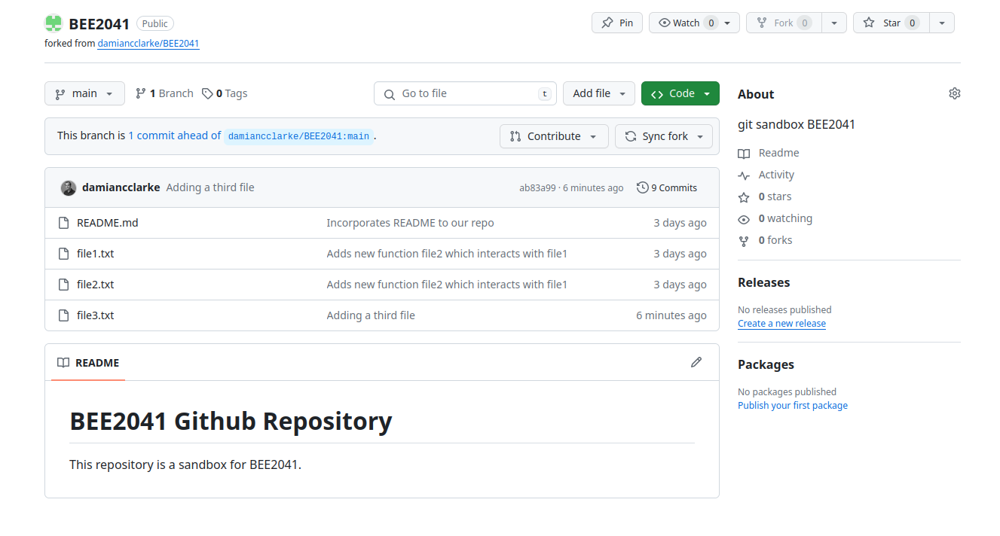
This change will only affect our code on github. What we haven’t yet done is suggest to the original developer that we wish to incorporate this change into the original code. If our code is incorporated into the origina developer’s repository, then anyone else who interacts with the code in the future will also have our commit. To ask the original developer to consider incorporating our code, we open a “pull request” on github. This is us asking the maintainer to “pull” our changes to their code. Below we can see how this looks.
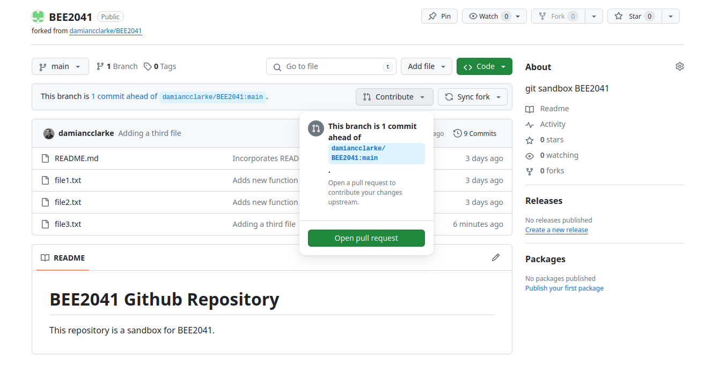
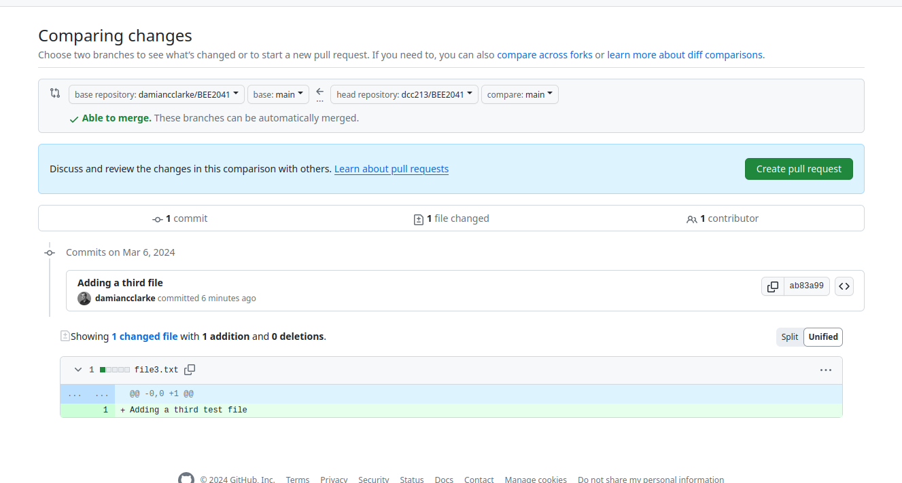
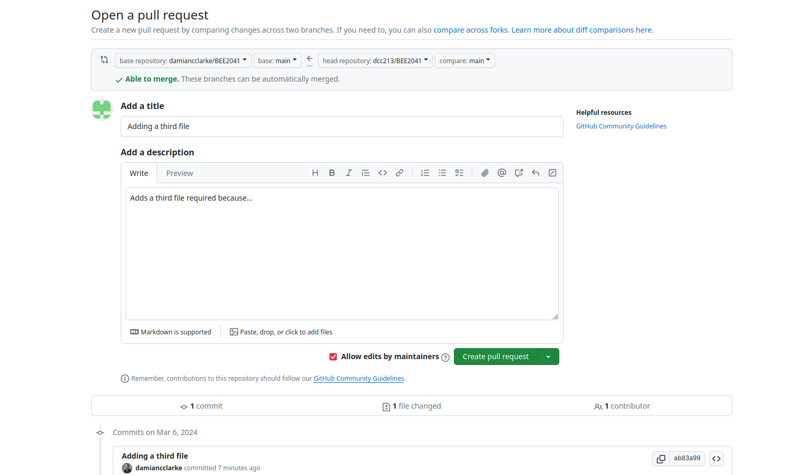
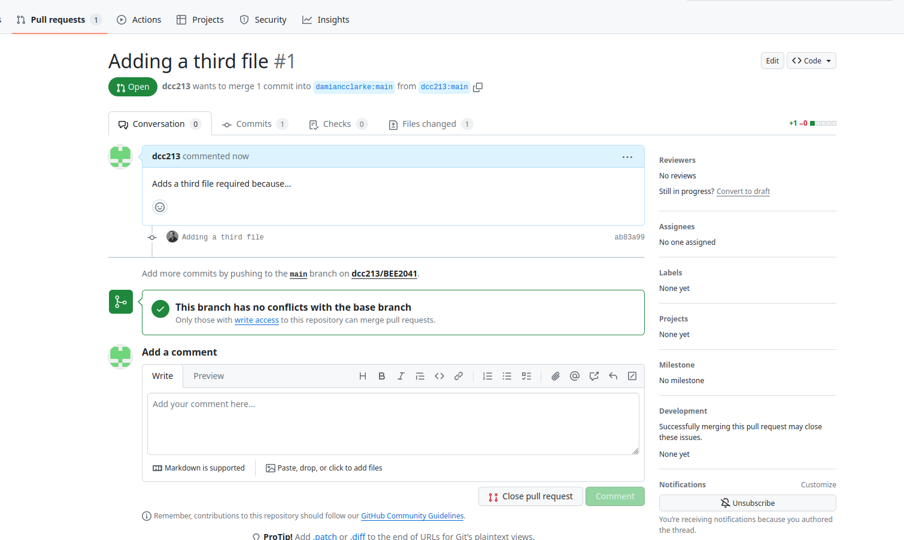
There are multiple stages in this process (hence the four screen shots above), but essentially, provided that there are no conflicts on code edits (ie no other changes to the same area of the code we have edited have been made to the original repository), we can simply click through and create the pull request.
Then it is up to the maintainer to see if they wish to accept our pull request. Provided they do, they can review the code and click on “Merge pull request”, as below:
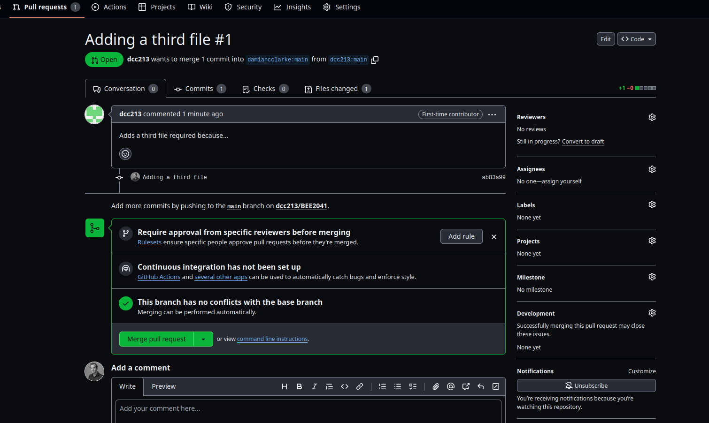
This will then result in changes to the published repository, where you can note that the version of the file which has been edited by us now has our commit message. This will now be available in the original repository, and will be the new version which anyone else works with.
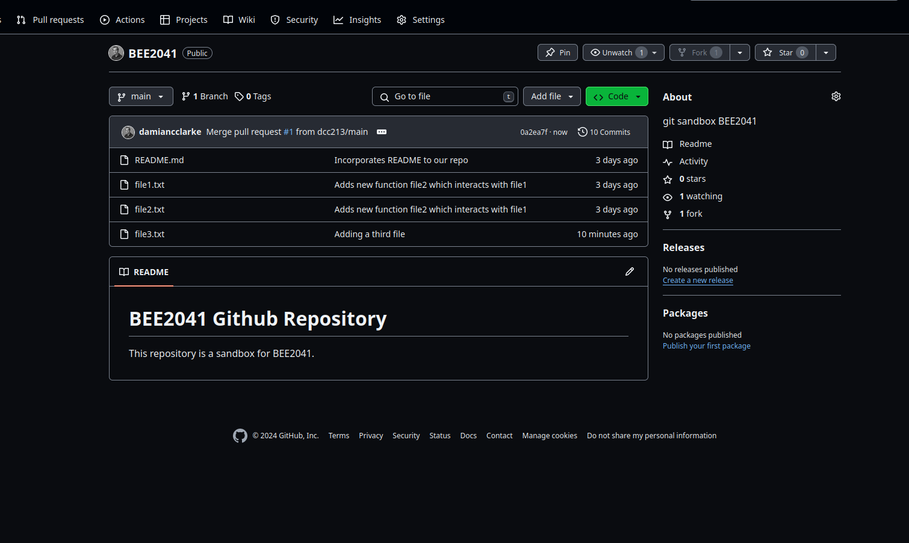
As a final brief note, when the original maintainer incorporates our code into their repository, this generates a change in the git history given their merge. Thus, if we want to keep developing code, we will have to update our version of the repository to match their version. Even though there will be no changes to the code itself, if we look on our version of the github repo, we will see that it now states that our branch is 1 commit behind the main branch (see screen shot below). Thus, if we wish to keep editing all we need to do is click on “Sync fork”.
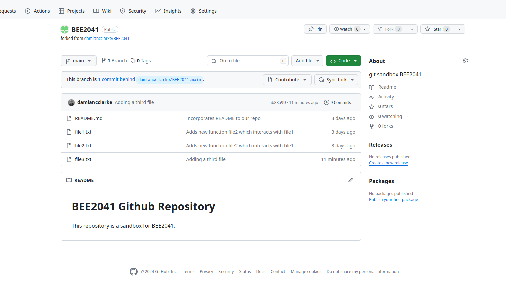
Finally, if we wish to update code locally on our machine we should also do a git pull in our local repository, which will ensure that things on our operating system are now mapped to our respository on github. This may ask us for our username and password, and once we have done this we will be up to date, and can keep working if we wish.
git pullremote: Enumerating objects: 1, done.
remote: Counting objects: 100% (1/1), done.
remote: Total 1 (delta 0), reused 0 (delta 0), pack-reused 0
Unpacking objects: 100% (1/1), 892 bytes | 892.00 KiB/s, done.
From https://github.com/dcc213/BEE2041
ab83a99..0a2ea7f main -> origin/main
Updating ab83a99..0a2ea7f
Fast-forward Let’s try out a few things to explore git and github, including some extensions we have not yet seen above. Please try and complete the following questions (which we will also discuss in tutorial in week 9).